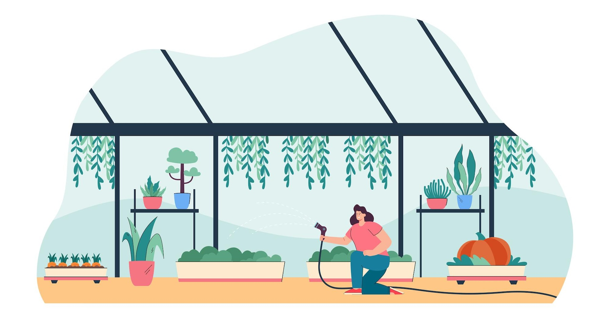

<ion-header [translucent]="true">
  <ion-toolbar>
    <ion-buttons slot="start">
      <ion-menu-button></ion-menu-button>
    </ion-buttons>

    <ion-buttons slot="end">
      <ion-button class="notification">
        <ion-icon name="notifications-outline" color="dark"></ion-icon>
        <span>&nbsp;</span>
      </ion-button>

      <ion-button class="filter">
        <ion-icon name="funnel-outline" color="dark"></ion-icon>
      </ion-button>
    </ion-buttons>

    <ion-title>{{ folder }}</ion-title>
  </ion-toolbar>
</ion-header>

<ion-content [fullscreen]="true">
  <ion-header collapse="condense">
    <ion-toolbar>
      <ion-title size="large">{{ folder }}</ion-title>
    </ion-toolbar>
  </ion-header>

  <div class="search ion-padding">
    <ion-item lines="none">
      <ion-input placeholder="Search your greenhouse"></ion-input>
      <ion-icon name="search-outline" slot="start"></ion-icon>
    </ion-item>

  </div>

  <div class="event-slider">
    <ion-slides [options]="{ slidesPerView: 'auto', zoom: false, grabCursor: true }" class="default-left-padding">
      <ion-slide>
        <ion-col class="ion-text-left">
          <ion-card>
            <ion-card-header class="ion-no-padding">
              
            </ion-card-header>
            
            <ion-card-content>
              <p class="date">17th July, 2022</p>
              <h2 class="eventname">International Jazz Festival</h2>
              <p class=""></p>
            </ion-card-content>

          </ion-card>
        </ion-col>
      </ion-slide>
    </ion-slides>
  </div>

  <div id="container">
    <strong class="capitalize">{{ folder }}</strong>
    <p>Explore <a target="_blank" rel="noopener noreferrer" href="https://ionicframework.com/docs/components">UI Components</a></p>
  </div>
</ion-content>
